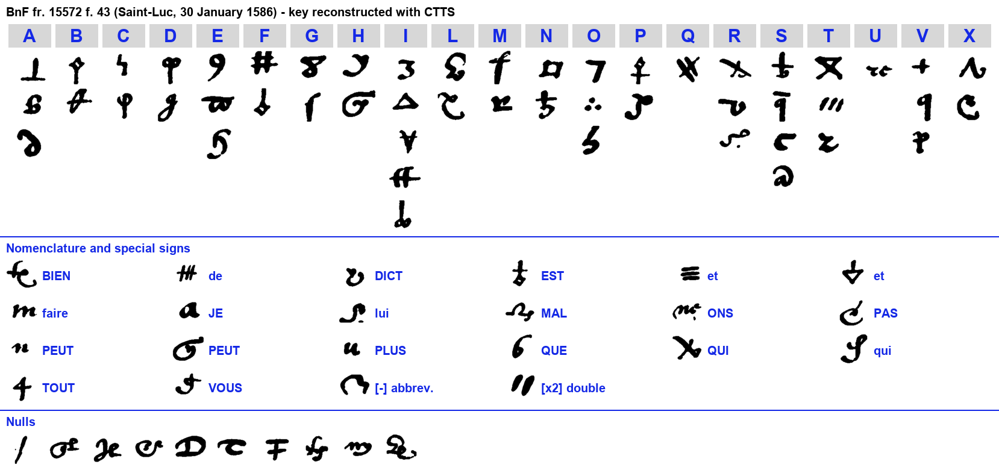
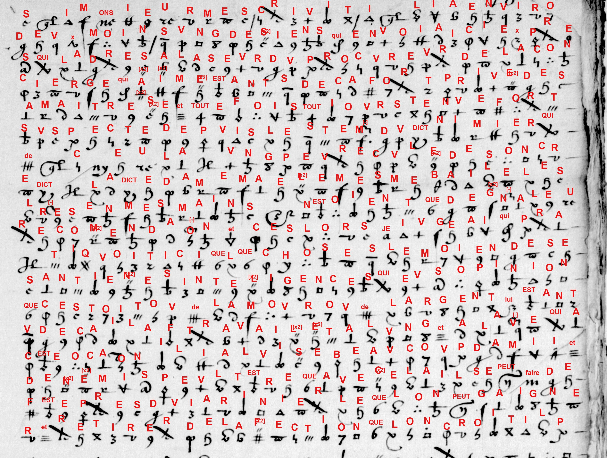

Reference. Bibliothèque nationale de France, Français 15572, f. 43 (Gallica); three images (f43a, f43b, f43c). New cyphersolver target saintluc1586.
Solved by George Lasry with CTTS in 2022 and its built-in cryptanalysis. The remaining nomenclator signs and the clear-text reading were completed in 2026 with Claude Opus 5.5.
S. Tomokiyo (Cryptiana) lists the folio as two pages "entirely in cipher, undeciphered, except for the date line Du xxxe Janvier 1586", in the same hand as Saint-Luc's letter in clear at f. 35, and dated the same day as Saint-Luc's letter at f. 42. He records that George Lasry solved it in 2022. All three images are read here: 1,315 cipher signs (1,168 letter homophones, 77 code signs, 44 doubling and abbreviation signs, 26 nulls), with every sign assigned.
| From | François d'Espinay, seigneur de Saint-Luc, governor of Brouage (attributed from the hand by Tomokiyo; the letter is unsigned) |
| To | Not named in the letter; the volume holds letters to Henri III and to his secretary of state Villeroy |
| Date | 30 January 1586 (date line in clear) |
| Content | An intelligence report on an agent of "Monsieur", sent to work on the household of "the concierge", in which the people are given cover names (the concierge, the gardener, the stonecutters, the governor, the planter). |
About two months earlier, "Monsieur" sent one of his men to the writer's area with letters of recommendation, addressed to the sister of the concierge's procurator. That woman had been close to her mistress but has been under suspicion since the summer of "the said Nimier". The lady herself handed the letters to the writer. He concluded that the man was intriguing to revive old contacts, either for love or for money, and had made friends and enemies doing so.
The writer suggests ways to use the household. The gardener could be won over and turned from his attachment to "the stonecutters". The concierge is set on a marriage between "the little one" and the half-brother of Saint-Sulpice, and the writer wants to spoil it by putting forward a second match: the courier's sister with the son of the chief of arms of Saint-Sulpice. Sermelles is much feared, and Monsieur Lue [du Lude?] would be feared more if Jugan were thought to have joined him. The writer proposes to spread that rumour on purpose to hold the concierge, since fear holds the old as often as reason does. He leaves the decision to "the governor". He says "the planter" is now on good terms with the concierge, who no longer thinks him a deceiver.
A homophonic substitution of 20 letters plus x, with 51 symbols. Most letters have two or three homophones; i has five and s four. A small nomenclator of 20 signs stands for 17 words and syllables (que, qui, est, de, et, dict, tout, faire, je, vous, lui, bien, plus, peut, pas, mal, ons). There is one sign for a doubled letter, one abbreviation sign, and 10 nulls.

The whole letter is enciphered except the date line. Bold marks words and syllables written with a single nomenclator sign. Spelling is kept as deciphered. [x?] marks an uncertain reading and [ ] an editorial addition.

Si monsieur m'escrivit il y a environ deux mois ung des siens, qui envoya ici exprès, qui l'adressa à la seur du procureur de la concierge, qui a aimée, estant deça, fort privée de sa maistresse et toutefois toutjours tenue fort suspecte depuis l'esté du dict Nimier, qui de cela [?] ung peu reculée de son credict. La dicte dame m'a elle mesme baillé les lettres en mes mains : n'estoient que de generale recommendation ; et ces lors je jugeai qui [qu'il] pratiquoit ici quelque chose, le moyen de ses antiennes intelligences, qui [que j'] eus opinion que c'estoit ou de l'amour ou de l'argent. Lui estant venu deça, il a fort travaillé et à l'ung et à l'aultre, qui à ceste occasion il y a luise [?] beaucoup d'amis et d'ennemis. Peult estre que avec cela il se peut faire de feste près du jardinier, lequel on peut gaigner et retirer de l'affection que l'on croit il porte aux tailleurs de pierre.
Sur tout le concierge a fort à coeur le mariage d'entre la petite et le demi frère de St Suplice, qui mena là encores dimanche ; et si ces ouvertures restent proposées desast [?], c'en est que de rompre le coup à l'aure [?], ayant adjousté cellui de la soeur du courrier avec le fils du chef des armes de St Suplice, de seullement bailler le goust et en faire venir l'envie. Je vous asseure que l'on craint ici fort Sermelles, et M[onsieu]r Lue craindroit bien plus si l'on pensoit que Jugan se joignist avec lui, qui vous dirai que peut estre ne seroit il pas mal à propos d'en faire courir le bruit à bon esciant, de retenir la concierge, estant ainsi que la crainte retient aussi souvent les vieux comme la raison. Toutefois le gouverneur jugera mieulx cela que le planteur. Commence à estre assés bien avec la concierge, qui se perd petit à petit ceste première opinion conceue, sinon de le estimer trop catholique, à tout le moins de ne le penser pas trompeur ni aimant les choses mauvaises.
Du xxxe Janvier 1586 [date line in clear, after Tomokiyo]
Monsieur wrote to me about two months ago that one of his men, whom he sent here on purpose, was to be addressed to the sister of the concierge's procurator. She was loved and, being on this side, very close to her mistress, and yet always held very suspect since the summer of the said Nimier, and for that [?] fallen somewhat back in her favour. The said lady herself put the letters into my hands: they were only of general recommendation. And from then on I judged that he was intriguing at something here, by means of his old contacts, and I believed that it was either for love or for money. He, having come over, has worked hard on both the one and the other, so that on this occasion he has made [?] many friends and enemies. Perhaps with that he can make himself welcome with the gardener, whom one can win over and draw away from the attachment that he is thought to bear the stonecutters.
Above all, the concierge has much at heart the marriage between the little one and the half-brother of Saint-Sulpice, who brought [him?] there again on Sunday. And if these overtures remain on the table [?], it is only to break the blow to the other [?], having added that of the courier's sister with the son of the chief of arms of Saint-Sulpice, just to give a taste of it and make them want it. I assure you that Sermelles is much feared here, and Monsieur Lue would fear much more if it were thought that Jugan was joining him. So I will tell you that perhaps it would not be amiss to have the rumour spread on purpose, to hold the concierge, since fear holds the old as often as reason does. However, the governor will judge this better than the planter. [He] begins to be on quite good terms with the concierge, who is little by little losing that first opinion she had formed: if not to think him too Catholic, at least not to think him a deceiver or one who loves bad things.
The 30th of January 1586 [date line in clear]
François d'Espinay de Saint-Luc (1554–1597) was one of Henri III's favourites (mignons). He fell from favour in 1580 and withdrew to Brouage, the salt port of Saintonge across from Huguenot La Rochelle, which he governed and fortified. By 1586 he was again serving the King in the war against Henri of Navarre that followed the Treaty of Nemours (July 1585). That year he took the island of Oléron from Agrippa d'Aubigné, whom he captured (Tomokiyo). BnF fr. 15572 gathers the ciphered and clear despatches of January–July 1586 from the King's commanders and agents in the west: Mayenne, Matignon, Biron, Malicorne and Saint-Luc. Most are addressed to Henri III or to Villeroy. Saint-Luc's other ciphered letters in the volume (f. 245, deciphered in the margin; f. 260) use a different table (Tomokiyo, "StLuc's Cipher").
The letter is written in cover names: the concierge, her mistress, the gardener, the stonecutters, the governor, the planter, the little one. The real people behind them are not identified here. Its subject is a familiar one for a governor facing La Rochelle: a party's agent working on a household through its servants, its marriages and its fears, and how to counter him. "Monsieur Lue" may stand for a member of the Daillon family, comtes du Lude and governors of Poitou (see Open points).
The three images were transcribed in CTTS (CrypTool Transcriber and Solver), and the homophones were recovered with CTTS's built-in cryptanalysis (George Lasry, 2022). In 2026 the thirteen signs still unassigned were resolved from context with Claude Opus 5.5:
The full reading was checked against the CTTS overlays of all three images.
matignon1586: records that f. 43 belongs to none of the Mayenne–Forget or Matignon ciphers and was solved by Lasry in 2022.